창원 블랙앤화이트 가족사진 — 색을 덜어내면 표정이 남는다
2026-10-21 발행
창원 블랙앤화이트 가족사진을 처음 제안드리면 대개 이렇게 물으십니다. "검정이랑 흰색만 입으면 너무 어둡지 않을까요." 사진을 보고 나면 질문이 바뀝니다. "이게 더 밝네요." 색이 빠지면 얼굴이 남기 때문입니다. 오늘은 상남동 스튜디오에서 찍은 블랙앤화이트 캐주얼 가족사진 열두 장을 보시면서, 왜 이 조합이 오래 가는 사진이 되는지 이야기해 보겠습니다.
사진에서 눈이 먼저 가는 곳은 대개 색입니다. 빨간 옷, 노란 옷. 그런데 색이 사라지면 눈은 사람으로 갑니다. 눈매, 입꼬리, 손이 놓인 자리. 그래서 흑백 톤의 사진은 오래 봐도 질리지 않습니다. 유행이 없기 때문입니다. 이십 년 전 흑백 사진과 오늘 흑백 사진은 같은 온도로 보입니다.
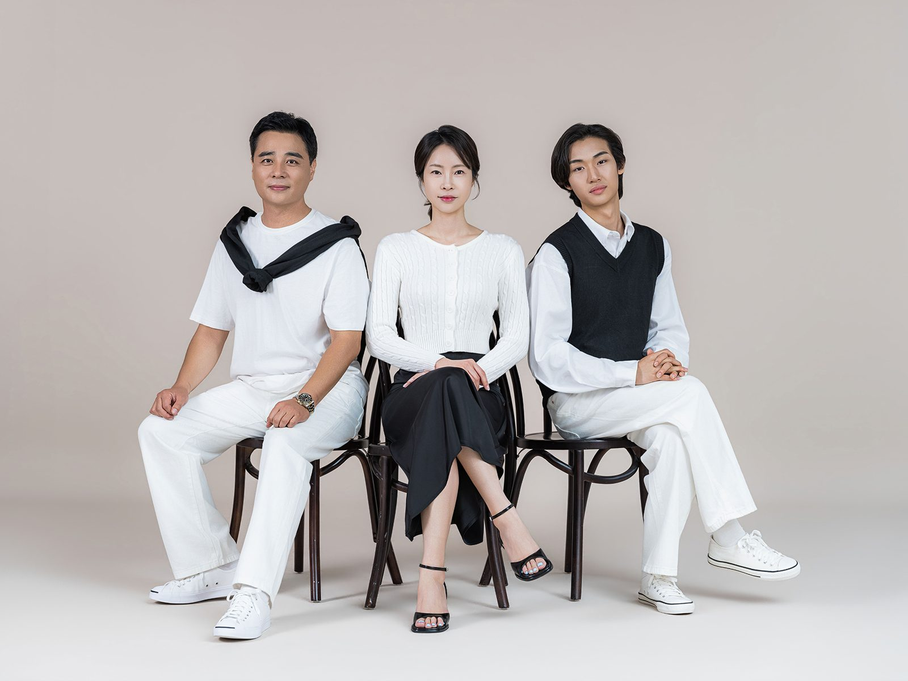
첫 사진은 세 식구입니다. 아버지와 어머니, 그리고 청년 아들. 세 사람 모두 무채색 계열의 옷을 입고 나란히 앉았습니다. 배경은 베이지색 무채색 벽입니다. 배경까지 색을 빼면 사진 전체가 한 톤이 되고, 그 위에 사람의 표정만 남습니다. 이 단순함이 블랙앤화이트 가족사진의 핵심입니다.
옷을 맞출 때 규칙은 하나입니다. 검정과 흰색, 그리고 그 사이의 회색. 이 세 가지 안에서 고르시면 됩니다. 아버지는 검정 조끼에 흰 셔츠, 어머니는 흰 블라우스에 검정 슬랙스, 아들은 검정 니트에 흰 셔츠. 서로 다른 옷인데 한 벌처럼 보입니다. 무늬는 넣지 않으시는 편이 좋습니다. 줄무늬 하나만 들어가도 사진이 복잡해집니다.
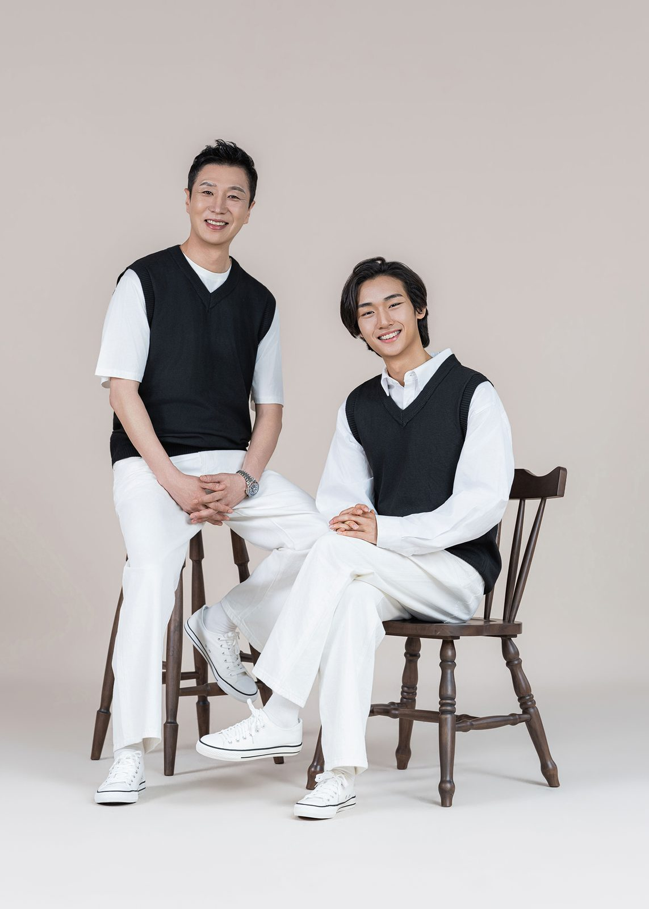
두 번째 컷은 아버지와 아들만 찍었습니다. 두 사람이 같은 옷을 입고 같은 의자에 앉아 서로를 봅니다. 아버지와 아들 사진은 따로 찍어 드리는 경우가 많습니다. 함께 사는 동안에는 두 사람만의 사진이 흔치 않기 때문입니다. 나중에 아들이 그 사진을 갖게 됩니다.
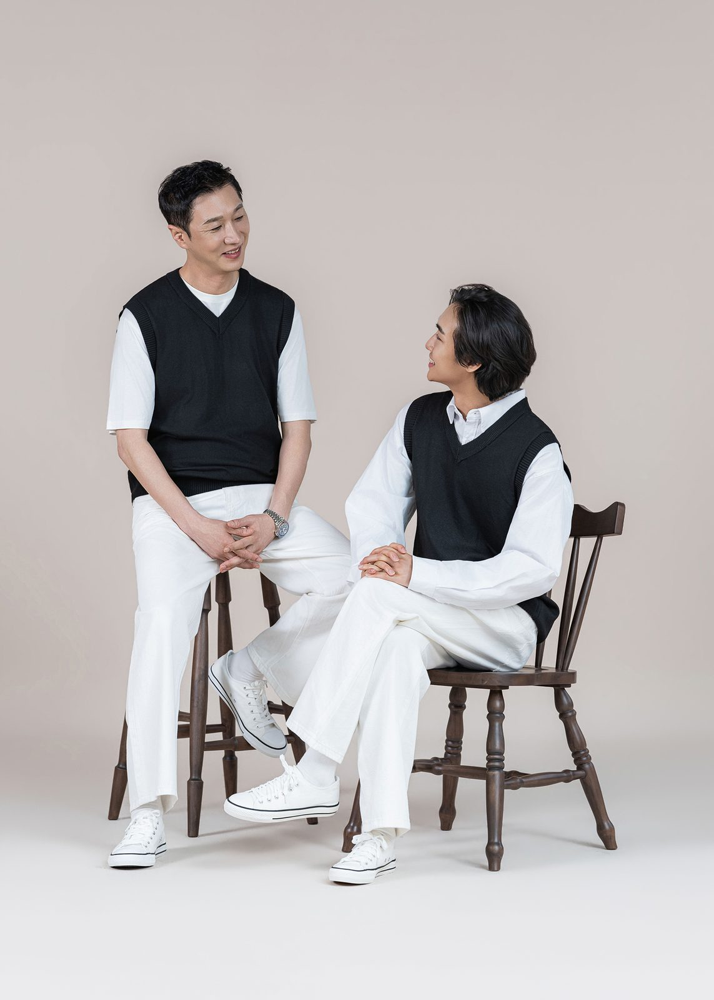
세 번째도 두 사람입니다. 이번에는 서로를 마주 봅니다. 카메라를 보지 않으면 표정이 조금 풀립니다. 남자는 원래 카메라 앞에서 어색해합니다. 그래서 남자끼리 찍을 때는 카메라를 잠시 잊게 만드는 편이 좋습니다. 옆 사람에게 말을 걸게 하면 그 순간 표정이 자연스러워집니다.
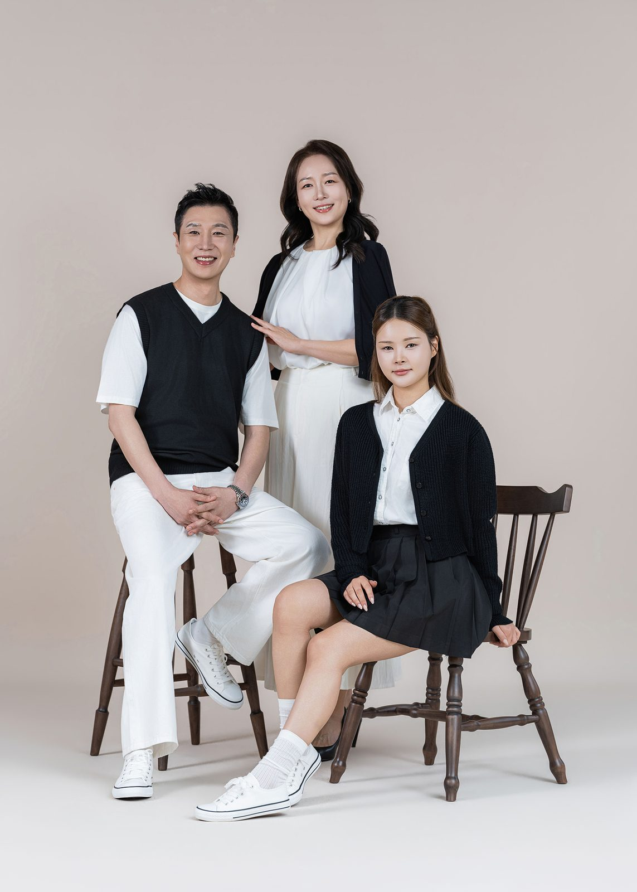
네 번째는 어머니와 두 자녀입니다. 여기서 눈여겨보실 곳은 손입니다. 어머니의 무릎 위에 놓인 딸의 손, 의자 팔걸이를 잡은 아들의 손. 흑백 사진에서는 손이 특히 잘 보입니다. 색이 없으니 손의 형태와 위치가 그대로 드러납니다. 그래서 촬영할 때 손을 한 번 더 확인합니다.
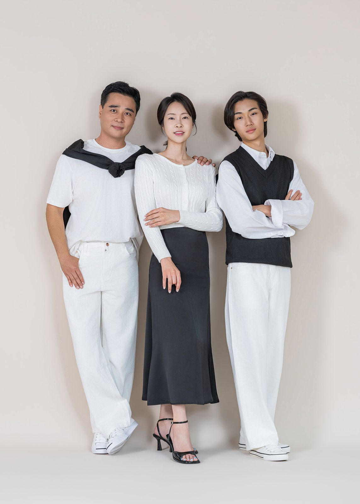
다섯 번째는 서서 찍었습니다. 같은 세 사람인데 앉은 사진과 선 사진의 분위기가 다릅니다. 앉으면 안정되고, 서면 당당해집니다. 가족사진을 찍으실 때는 앉은 컷과 선 컷을 반드시 둘 다 남기시길 권합니다. 나중에 액자를 고를 때 선택의 폭이 넓어집니다.
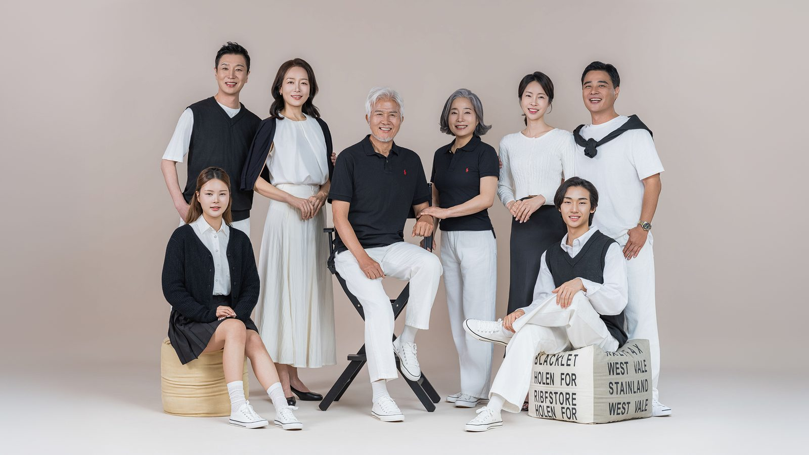
여섯 번째부터는 큰 가족입니다. 여덟 식구가 한 프레임에 들어왔습니다. 이 정도 인원이면 구도를 짜는 데만 십 분이 걸립니다. 가운데에 어르신을 모시고, 앞줄은 앉고 뒷줄은 서게 합니다. 키 순서로 줄을 세우면 사진이 정돈됩니다. 다만 부부는 붙여 앉히세요. 부부가 떨어져 있으면 사진이 어색해집니다.
여덟 식구가 모두 검정과 흰색을 입고 오시면 준비가 반쯤 끝난 것입니다. 문제는 신발입니다. 상반신만 나오는 사진이라도 신발이 프레임에 걸칠 때가 있습니다. 흰 운동화를 맞춰 신으시면 사진이 한 번 더 정돈됩니다. 실제로 이 가족은 여섯 명이 흰 운동화를 신고 오셨습니다.
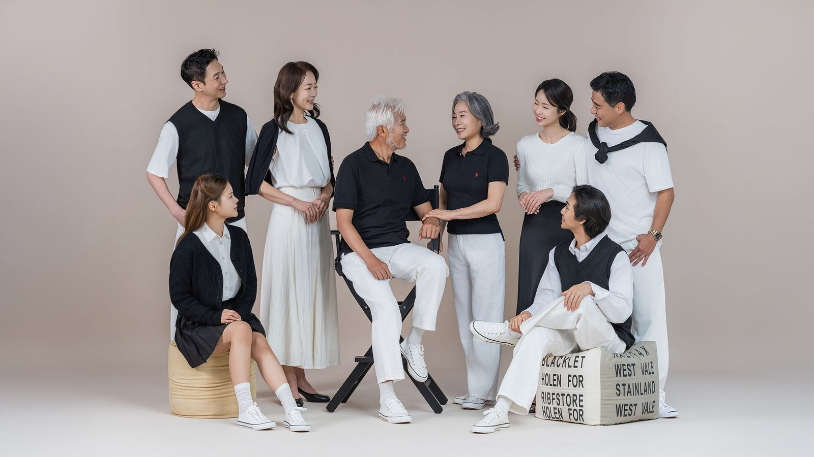
일곱 번째 컷은 시선을 살짝 돌렸습니다. 카메라를 보지 않고 서로를 보게 했습니다. 여덟 사람이 각자 다른 곳을 보면 사진이 흩어지지만, 서로 마주 보게 하면 한 덩어리가 됩니다. 큰 가족사진에서 가장 중요한 것은 인원이 아니라 연결입니다.
큰 가족사진은 시간이 걸립니다. 여덟 분이 각자 자리를 잡고, 옷매무새를 고치고, 아이를 달래는 데 삼십 분이 지납니다. 그래서 촬영 예약을 잡으실 때 인원을 미리 알려 주시면 동선을 짜서 준비합니다. 어르신이 계시면 의자를 먼저 놓고, 아이가 있으면 대기 자리를 따로 만듭니다.
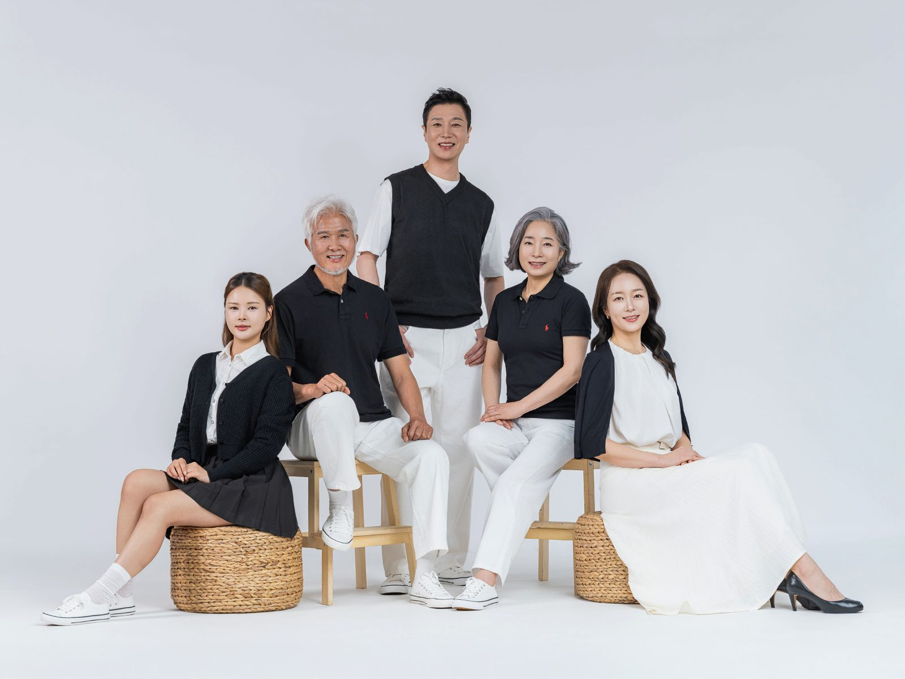
여덟 번째는 다섯 식구입니다. 흰 배경에 검정과 흰색 옷. 배경이 밝아지면 사진의 공기가 달라집니다. 같은 옷, 같은 사람인데 베이지 배경에서는 차분하게, 흰 배경에서는 경쾌하게 보입니다. 배경 하나로 사진의 성격이 바뀌는 것입니다.
블랙앤화이트 가족사진은 집에 걸었을 때도 좋습니다. 거실 벽지나 가구 색을 가리지 않습니다. 원목 가구, 회색 소파, 흰 벽 어디에 걸어도 사진이 튀지 않고 벽의 일부처럼 자리를 잡습니다. 그래서 인테리어를 새로 하신 집에서 이 시리즈를 찾으시는 분들이 있습니다.
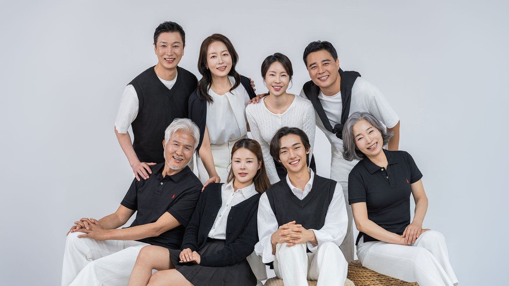
아홉 번째 컷은 여덟 식구를 정면으로 모았습니다. 앞줄 네 명이 앉고 뒷줄 네 명이 섰습니다. 어깨를 맞대게 하면 서로 가까워 보입니다. 이때 발끝을 살짝 벌리게 하면 몸이 안정되어 보입니다. 사진에서 사람이 흔들려 보이는 것은 대개 발 때문입니다.
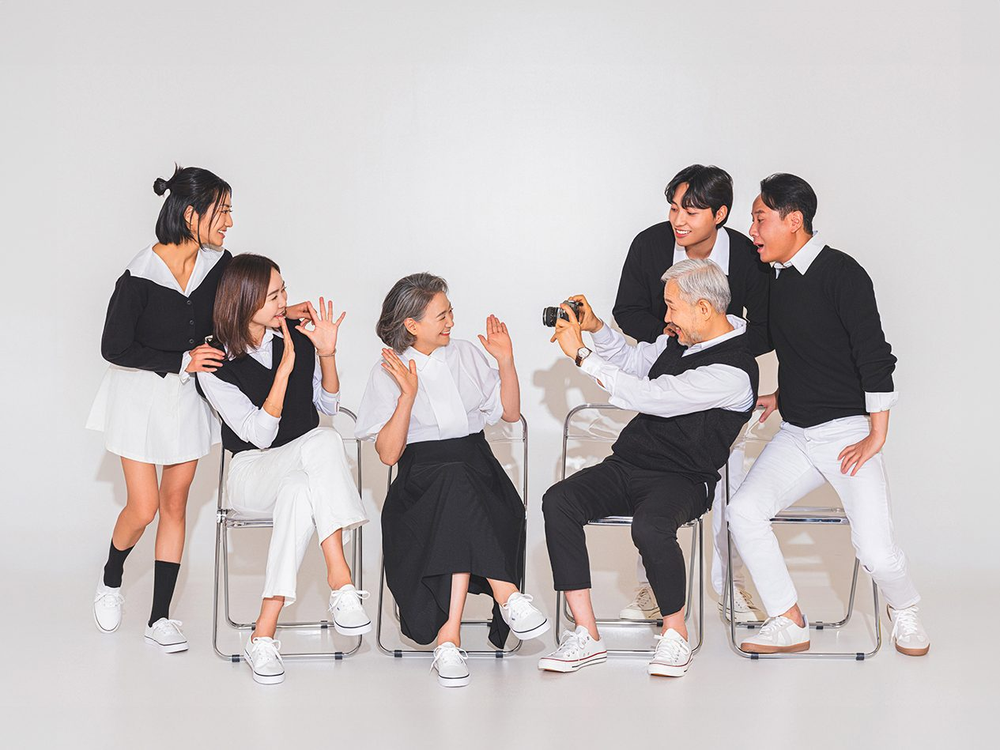
열 번째 컷은 조금 다른 시도를 했습니다. 어르신이 카메라를 들고 가족을 찍는 모습입니다. 이 사진은 실제로 찍은 것이 아니라 상황을 연출한 것입니다. 그런데 이 컷이 가장 좋았다고 하시는 분들이 많습니다. 사진관에서 찍는 사진인데, 사진 찍는 사람이 사진 안에 있으니 이야기가 생깁니다.
가족사진을 찍을 때 저는 가끔 이런 장면을 제안합니다. 우산을 함께 쓰는 컷, 신문을 같이 보는 컷, 서로의 어깨를 두드리는 컷. 다 같은 사람들인데 사진이 달라집니다. 사진은 포즈보다 상황이 오래 남습니다. 무엇을 하고 있었는지가 기억에 남기 때문입니다.
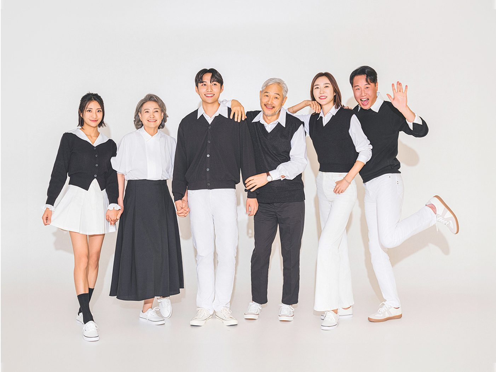
열한 번째는 손을 잡고 서 있는 컷입니다. 흑백 톤의 옷을 입은 여섯 사람이 손을 잡으면 사진이 하나의 선이 됩니다. 이 사진은 가로로 길게 인화했을 때 가장 좋습니다. 거실 소파 위 긴 벽에 걸면 공간이 넓어 보이는 효과도 있습니다.
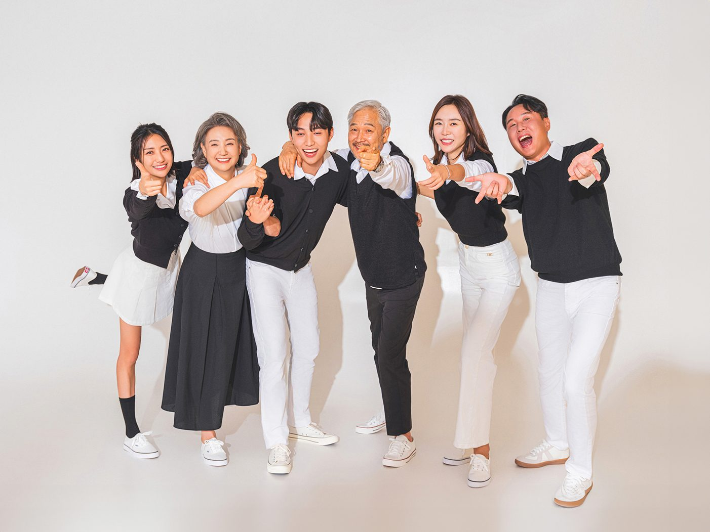
마지막은 조금 가볍게 찍었습니다. 손을 흔들고, 엄지를 치켜들고, 서로를 가리키기도 했습니다. 블랙앤화이트라고 해서 표정까지 무거울 필요는 없습니다. 오히려 무채색 옷에 밝은 표정이 어울릴 때 사진이 제일 좋습니다.
옷을 준비하실 때는 각자 집에 있는 옷으로 충분합니다. 검정 니트, 흰 셔츠, 회색 가디건, 검정 슬랙스, 흰 운동화. 이 다섯 가지만 있으면 여덟 명도 맞출 수 있습니다. 옷을 새로 사지 않으셔도 된다는 점이 이 시리즈의 장점입니다. 다만 세탁은 미리 하시고, 주름은 펴 두세요.
촬영은 두 시간 남짓 걸립니다. 인원이 여덟 명을 넘으면 세 시간을 잡습니다. 사진을 고르는 시간은 따로 사십 분에서 한 시간입니다. 고르신 사진은 원목 액자에 넣는데, 흑백 톤 사진에는 밝은 오크나 짙은 월넛이 모두 잘 맞습니다. 벽 색이 따뜻하면 오크, 차가우면 월넛을 권합니다.
창원 블랙앤화이트 가족사진은 상남동 롯데빌딩 2층에서 찍습니다. 건물 지하에 주차장이 있고, 상담은 촬영 전에 십 분 정도 드립니다. 예약과 문의는 전화 055-287-8022 또는 카카오채널로 하시면 됩니다. 옷 조합이 고민되시면 준비하신 옷을 사진으로 찍어 보내 주세요. 함께 맞춰 드립니다.
사랑이야기 스튜디오 창원점 / 주소: 경남 창원시 성산구 원이대로 652, 상남동 롯데빌딩 2층 / 전화: 창원점 055-287-8022, 의령점 055-574-3706 / 홈페이지: lovestorykim.com / 인스타그램: @lovestorychangwon / 운영: 김작가
자주 묻는 질문
Q. 검정과 흰색만 입어야 하나요?
A. 검정·흰색·회색 세 가지 안에서 고르시면 됩니다. 무늬는 한 사람만, 또는 넣지 않으시는 편이 사진이 깔끔합니다. 흰 운동화를 맞춰 신으시면 발까지 정돈되어 보입니다.
Q. 여덟 명이 넘어도 한 번에 찍을 수 있나요?
A. 가능합니다. 다만 인원이 많으면 구도를 잡는 데 시간이 걸려 세 시간 정도를 잡습니다. 예약하실 때 인원과 연령대를 알려 주시면 의자와 동선을 미리 준비합니다.
Q. 흑백으로 인화해야 하나요?
A. 아닙니다. 옷과 배경을 무채색으로 맞춘 컬러 사진입니다. 컬러로 인화해도 차분하게 보이고, 흑백으로 한 번 더 인화하시면 다른 분위기의 사진을 함께 갖게 됩니다.

오시는 곳
사랑이야기창원점
- 주소 경남 창원시 성산구 원이대로 652, 상남동 롯데빌딩 2층
- 전화 055-287-8022
- 영업시간 오전 10:00 ~ 오후 7:00
- 예약 전화 상담 · 카카오톡 채널
- 주차 건물 지하 주차장
김작가사진이야기 의령
- 주소 경남 의령군 궁류면 청정로 1188
- 전화 055-574-3706
- 영업시간 오전 10:00 ~ 오후 7:00
- 예약 전화 상담 · 카카오톡 채널
- 주차 전용 주차장
이 글에 한마디
댓글창을 준비하고 있습니다. 그동안 궁금한 점은 카카오채널로 남겨 주시면 바로 답변드립니다.
카카오채널로 한마디 남기기